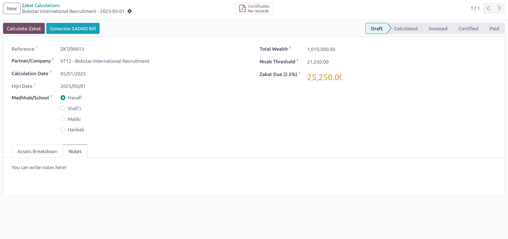
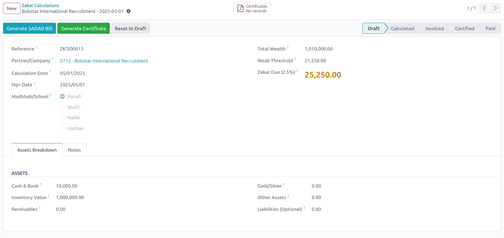
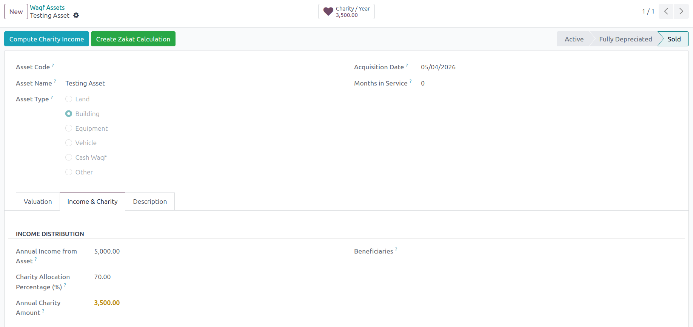
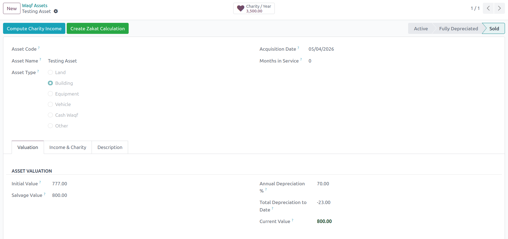
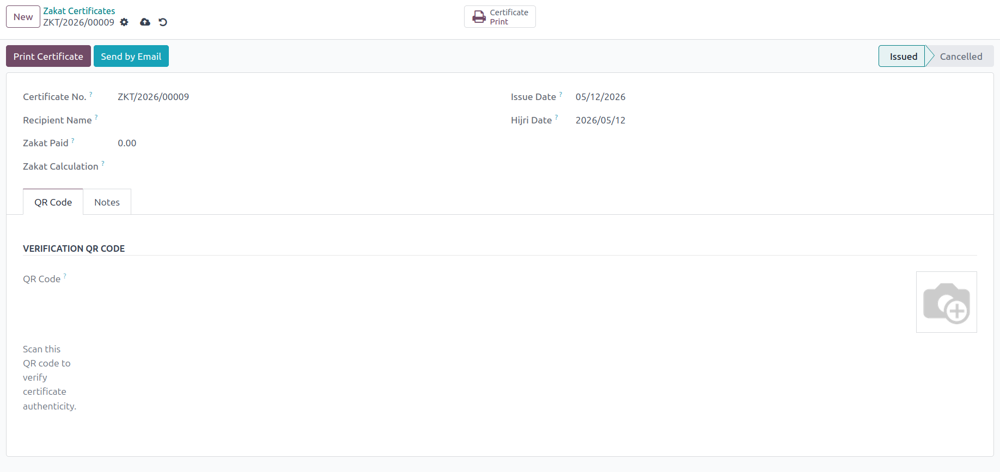
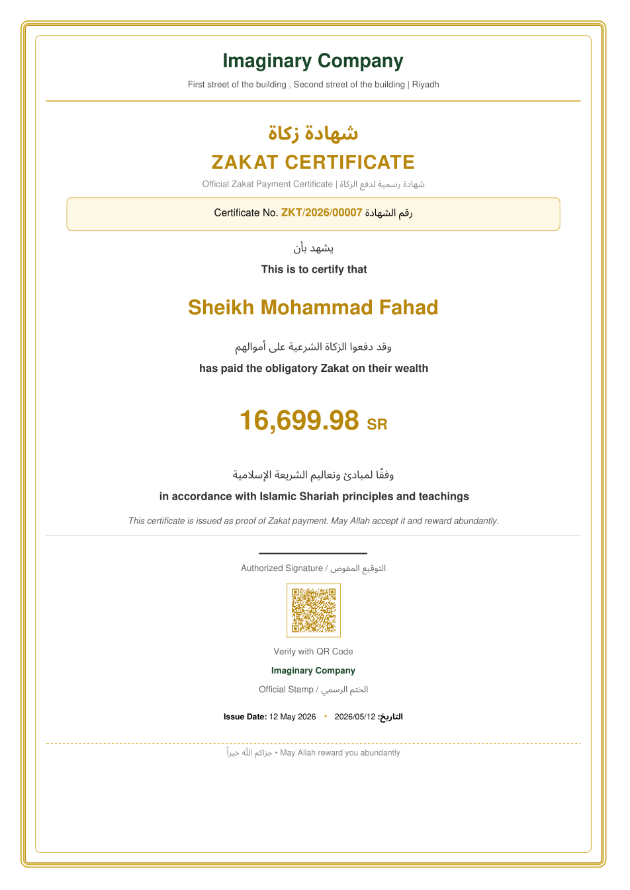

What is ZakatPro?
ZakatPro is the first complete Zakat and Waqf management module for Odoo 17. It automatically calculates Zakat (2.5%) on cash, inventory, receivables, gold, and other assets, checks the Nisab threshold, and generates official bilingual certificates accepted by authorities in Saudi Arabia, UAE, Qatar, Kuwait, Bahrain, and Oman.
Key Features
Automatic Zakat Calculation
2.5% of net wealth with automatic Nisab check based on gold price (85g gold threshold). Supports Hanafi, Shafi'i, Maliki & Hanbali schools.
Official Certificate + QR Code
Generate professional, single-page PDF certificates with a gold border, unique serial number, bilingual text, and a scannable QR code for verification.
SADAD Integration
One-click generation of SADAD-compatible customer invoices for seamless Zakat payment collection.
Waqf Asset Tracker
Track land, buildings, and equipment with full depreciation, annual income calculation, and automated charity distribution to beneficiaries.
Auto-Sync with Accounting
Automatically fetch cash, receivables, and inventory values from your Odoo accounting and stock modules.
Hijri Date Support
All calculations and certificates display dates in both Hijri (Islamic) and Gregorian calendars.
How It Works (Step by Step)
Select a partner or company, enter your assets (Cash, Inventory, Receivables, Gold, etc.), and choose your Madhhab/School.

The system automatically calculates total wealth, compares it with the Nisab threshold, and shows the exact Zakat due (2.5%).

Track your Waqf assets (Land, Buildings, Equipment). Enter initial value, depreciation rate, annual income, and charity allocation percentage.


Click "Generate Certificate" from any calculation. The system will create a unique, verifiable certificate.

A beautiful, bilingual PDF certificate is produced, complete with a gold border, authorized signature, QR code for verification, and company stamp.

Technical Specifications
- Odoo Version: 17.0 (Community & Enterprise)
- Dependencies: account, stock, hr, mail
- Languages: English (default) + full Arabic translation included
- Multi-Company: Yes
- Multi-Currency: Yes
- Zakat Calculation: 2.5% of net wealth (Cash + Inventory + Receivables + Gold + Other Assets - Liabilities)
- Nisab Threshold: 85g gold price (configurable in settings)
- Certificate Format: Single-page PDF with gold border and QR code
Why ZakatPro vs Manual Excel?
| Feature | ZakatPro | Manual Excel |
|---|---|---|
| Auto-calculation | Yes | Error-prone |
| Nisab check | Automatic | Manual |
| Official certificate | One click | Design yourself |
| SADAD invoice | Integrated | Not available |
| Waqf asset tracking | Included | Not available |
| Audit trail | Full Odoo logs | None |
What's Included in Your Purchase?
Full Module
Complete Odoo 17 module with all models, views, reports, and enterprise-grade security rules.
Arabic Translation
Full, accurate Arabic translation (ar_001) for all user interfaces, buttons, and the final certificate.
Certificate Template
Beautiful, print-ready PDF certificate template with gold border, stamp design, and QR code support.
Installation Guide
Step-by-step PDF guide (10 pages with screenshots) to get you up and running in minutes.
12 Months Updates
Includes all future bug fixes, security patches, and minor updates for one year.
Priority Email Support
Direct email support for 12 months. We commit to responding within 24 hours on business days.
Who Is This For?
- Companies in Saudi Arabia — Zakat calculation for corporate Zakat (2.5% of net wealth)
- Companies in UAE, Qatar, Kuwait, Bahrain, Oman — Islamic finance compliance
- Islamic Banks & Financial Institutions — Customer Zakat calculation service
- Charities & Waqf Organizations — Track endowment assets and income distribution
- Accounting Firms — Offer Zakat calculation as a service to clients
- Odoo Partners & Implementers — Add Islamic finance features to your client projects
Frequently Asked Questions
Is this module ZATCA compliant?
Yes, the SADAD invoice integrates with Odoo's standard accounting and works with ZATCA e-invoicing requirements when used with the l10n_gcc_invoice module.
Does it work with Odoo Community Edition?
Yes! ZakatPro works perfectly on both Odoo Community and Enterprise editions.
Can I customize the certificate design?
Absolutely. The certificate uses standard Odoo QWeb templates. You can modify colors, logos, and layout easily.
How is Zakat calculated?
Zakat = 2.5% of (Cash + Inventory + Receivables + Gold/Silver + Other Assets). Nisab threshold = 85g × current gold price (configurable in settings).
What if the total wealth is below Nisab?
Zakat Due will show 0.00 SAR, and certificate generation will be disabled until Nisab is met.
What if I need help with installation or a bug?
After purchase, simply email us at support@yourcompany.com or use the Odoo App Store ticket system. Your purchase includes 12 months of support.
Ready to automate Zakat calculations?
One-time payment · No subscription · Lifetime access
✅ 12 months free updates ✅ 12 months email support ✅ 30-day money-back guarantee
Buy Now on Odoo App Store →After purchase, you'll receive an instant download link and installation guide.
Need Help?
Before purchase: support@yourcompany.com
After purchase: Use the Odoo App Store ticket system or email us directly.
Average response time: 12-24 hours (Sunday-Thursday).